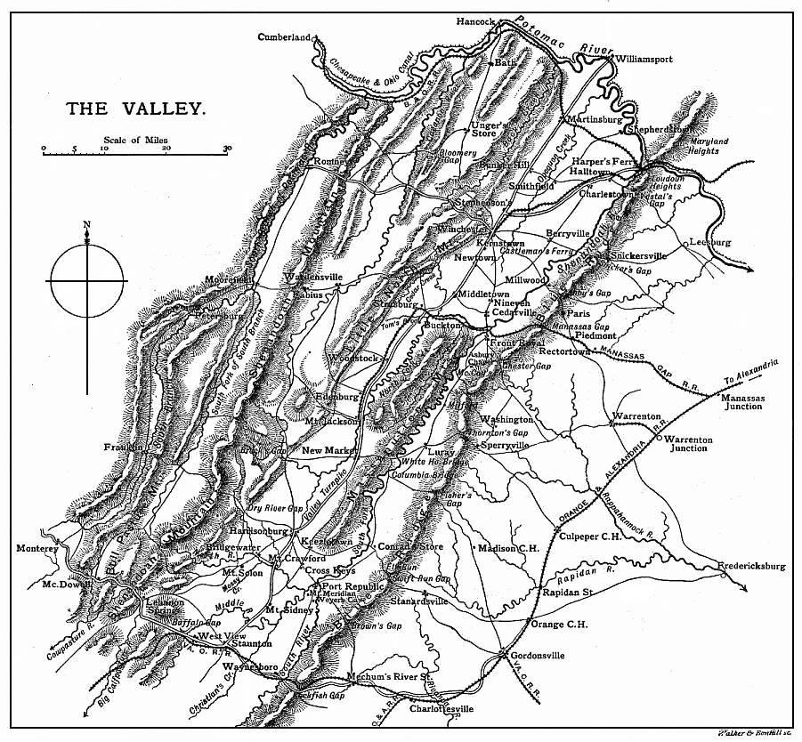

While the Indian summer still held carnival in the forests of Virginia, Jackson found himself once more on the Shenandoah. Some regiments of militia, the greater part of which were armed with flint-lock muskets, and a few squadrons of irregular cavalry formed his sole command.
The autumn of 1861 was a comparatively quiet season. The North, silent but determined, was preparing to put forth her stupendous strength. Scott had resigned; McDowell had been superseded; but the President had found a general who had caught the confidence of the nation. In the same month that had witnessed McDowell’s defeat, a young officer had gained a cheap victory over a small Confederate force in West Virginia, and his grandiloquent dispatches had magnified the achievement in the eyes of the Northern people. He was at once nicknamed the “Young Napoleon,” and his accession to the chief command of the Federal armies was enthusiastically approved. General McClellan had been educated at West Point, and had graduated first of the class in which Jackson was seventeenth. He had been appointed to the engineers, had served on the staff in the war with Mexico, and as United States Commissioner with the Allied armies in the Crimea. In 1857 he resigned, to become president of a railway company, and when the war broke out he was commissioned by the State of Ohio as Major-General of Volunteers. His reputation at the Military Academy and in the regular army had been high. His ability and industry were unquestioned. His physique was powerful, and he was a fine horseman. His influence
INACTION OF THE CONFEDERATES 172
over his troops was remarkable, and he was emphatically a gentleman.
It was most fortunate for the Union at this juncture that caution and method were his distinguishing characteristics. The States had placed at Lincoln’s disposal sufficient troops to form an army seven times greater than that which had been defeated at Bull Run. McClellan, however, had no thought of committing the new levies to an enterprise for which they were unfitted. He had determined that the army should make no move till it could do so with the certainty of success, and the winter months were to be devoted to training and organisation. Nor was there any cry for immediate action. The experiment of a civilian army had proved a terrible failure. The nation that had been so confident of capturing Richmond, was now anxious for the security of Washington. The war had been in progress for nearly six months, and yet the troops were manifestly unfit for offensive operations. Even the crude strategists of the press had become alive to the importance of drill and discipline.
October 21 A reconnaissance in force, pushed (contrary to McClellan’s orders) across the Potomac, was repulsed by General Evans at Ball’s Bluff with heavy loss; and mismanagement and misconduct were so evident that the defeat did much towards inculcating patience.
So the work went on, quietly but surely, the general supported by the President, and the nation giving men and money without remonstrance. The South, on the other hand, was still apathetic. The people, deluded by their decisive victory, underrated the latent strength of their mighty adversary. They appear to have believed that the earthworks which had transformed Centreville into a formidable fortress, manned by the Army of Northern Virginia, as the force under Johnston was now designated, were sufficient in themselves to end the war. They had not yet learned that there were many roads to Richmond, and that a passive defence is no safeguard against a persevering foe. The Government, expecting much from the intervention of the European Powers, did nothing to press the
INACTION OF THE CONFEDERATES 173
advantage already gained. In vain the generals urged the President to reinforce the army at Centreville to 60,000 men, and to give it transport and supplies sufficient to permit the passage of the Potomac above Washington.
In vain they pointed out, in answer to the reply that the Government could furnish neither men nor arms, that large bodies of troops were retained at points the occupation of which by the enemy would cause only a local inconvenience. “Was it not possible,” they asked the President, “by stripping other points to the last they would bear, and even risking defeat at all other places, to put the Virginian army in condition for a forward movement? Success,” they said, “in the neighbourhood of Washington was success everywhere, and it was upon the north-eastern frontier that all the available force of the Confederacy should be concentrated.”
Mr. Davis was immovable. Although Lee, who had been appointed to a command in West Virginia almost immediately after Bull Run, was no longer at hand to advise him, he probably saw the strategical requirements of the situation. That a concentrated attack on a vital point is a better measure of security than dissemination along a frontier, that the counter-stroke is the soul of the defence, and that the true policy of the State which is compelled to take up arms against a superior foe is to allow that foe no breathing-space, are truisms which it would be an insult to his ability to say that he did not realise. But to have surrendered territory to the temporary occupation of the enemy, in order to seek a problematical victory elsewhere, would have probably provoked a storm of discontent. The authority of the new Government was not yet firmly established; nor was the patriotism of the Southern people so entirely unselfish as to render them willing to endure minor evils in order to achieve a great result. They were willing to fight, but they were unwilling that their own States should be left unprotected. To apply Frederick the Great’s maxim1
1 “A defensive war is apt to betray us into too frequent detachments. Those generals who have had but little experience attempt to protect every point, while those who are better acquainted with their profession, having only the capital object in view, guard against a decisive blow, and acquiesce in smaller misfortunes to avoid greater.” Frederick the Great’s Instructions to his Generals.
JACKSON’S VIEW OF THE SITUATION 174
requires greater strength of will in the statesman than in the soldier. The cries and complaints of those who find themselves abandoned do not penetrate to the camp, but they may bring down an administration. It is easy to contrive excuses for the inaction of the President, and it is no new thing to find the demands of strategy sacrificed to political expediency. Nor did the army which had suffered so heavily on the banks of Bull Run evince any marked desire to be led across the Potomac. Furloughs were liberally granted. Officers and privates dispersed to look after their farms and their plantations. The harvests had to be gathered, the negroes required the master’s eye, and even the counties of Virginia asked that part of the contingents they had furnished might be permitted to return to agricultural pursuits.
The senior generals of the Virginia army were not alone in believing that the victory they had won would be barren of result unless it were at once utilised as a basis for further action. Jackson, engrossed as he was with the training of his command, found time to reflect on the broader aspects of the war. Before he left for the Shenandoah Valley he sought an interview with General G. W. Smith, recently appointed to the command of his division. “Finding me lying down in my tent,” writes this officer, “he expressed regret that I was sick, and said he had come to confer with me on a subject of great importance, but would not then trouble me with it. I told him that I wished to hear whatever he desired to say, and could rest whilst he was talking. He immediately sat down on the ground, near the head of the cot on which I was lying, and entered on the subject of his visit.
” ‘McClellan,’ he said, ‘with his army of recruits, will not attempt to come out against us this autumn. If we remain inactive they will have greatly the advantage over us next spring. Their raw recruits will have then become
JACKSON’S VIEW OF THE SITUATION 175
an organised army, vastly superior in numbers to our own. We are ready at the present moment for active operations in the field, while they are not. We ought to invade their country now, and not wait for them to make the necessary preparations to invade ours. If the President would reinforce this army by taking troops from other points not threatened, and let us make an active campaign of invasion before winter sets in, McClellan’s raw recruits could not stand against us in the field.
“ ‘Crossing the Upper Potomac, occupying Baltimore, and taking possession of Maryland, we could cut off the communications of Washington, force the Federal Government to abandon the capital, beat McClellan’s army if it came out against us in the open country, destroy industrial establishments wherever we found them, break up the lines of interior commercial intercourse, close the coal-mines, seize and, if necessary, destroy the manufactories and commerce of Philadelphia, and of other large cities in our reach; take and hold the narrow neck of country between Pittsburg and Lake Erie; subsist mainly the country we traverse, and making unrelenting war amidst their homes, force the people of the North to understand what it will cost them to hold the South in the Union at the bayonet’s point.’
“He then requested me to use my influence with Generals Johnston and Beauregard in favour of immediate aggressive operations. I told him that I was sure that an attempt on my part to exert any influence in favour of his proposition would do no good. Not content with my answer he repeated his arguments, dwelling more at length on the advantages of such strategy to ourselves and its disadvantages to the enemy, and again urged me to use my influence to secure its adoption. I gave him the same reply I had already made.
“After a few minutes’ thought he abruptly said: ‘General, you have not expressed any opinion in regard to the views I have laid before you. But I feel assured that you favour them, and I think you ought to do all in your power to have them carried into effect.’
WINCHESTER 176
“I then said, ‘I will tell you a secret.’
“He replied, ‘Please do not tell me any secret. I would prefer not to hear it.’ I answered, ‘I must tell it to you, and I have no hesitation in doing so, because I am certain that it will not be divulged.’ I then explained to him that these views had already been laid before the Government, in a conference which had taken place at Fairfax Court House, in the first days of October, between President Davis, Generals Johnston, Beauregard, and myself, and told him the result.
“When I had finished, he rose from the ground, on which he had been seated, shook my hand warmly, and said, ‘I am sorry, very sorry.’
“Without another word he went slowly out to his horse, a few feet in front of my tent, mounted very deliberately, and rode sadly away. A few days afterwards he was ordered to the Valley.”1
Nov. 5 It was under such depressing circumstances that Jackson quitted the army which, boldly used, might have ensured the existence of the Confederacy. His headquarters were established at Winchester; and, in communication with Centreville by road, rail, and telegraph, although sixty miles distant, he was still subordinate to Johnston. The Confederate front extended from Fredericksburg on the Rappahannock to Winchester on the Opequon. Jackson’s force, holding the Valley of the Shenandoah and the line of the Potomac westward of Point of Rocks, was the extreme outpost on the left, and was connected with the main body by a detachment at Leesburg, on the other side of the Blue Ridge, under his brother-in-law, General D. H. Hill.
At Winchester his wife joined him, and of their first meeting she tells a pretty story:—
“It can readily be imagined with what delight General Jackson’s domestic plans for the winter were hailed by me, and without waiting for the promised ‘aide’ to be sent on escort, I joined some friends who were going to Richmond, where I spent a few days to shop, to secure a passport, and
1 Letter of General G. W. Smith to the author.
WINCHESTER 177
to await an escort to Winchester. The latter was soon found in a kind-hearted, absent-minded old clergyman. We travelled by stage coach from Strasbourg, and were told, before reaching Winchester, that General Jackson was not there, having gone with his command on an expedition. It was therefore with a feeling of sad disappointment and loneliness that I alighted in front of Taylor’s hotel, at midnight, in the early part of dreary cold December, and no husband to meet me with a glad welcome. By the dim lamplight I noticed a small group of soldiers standing in the wide hall, but they remained silent spectators, and my escort led me up the big stairway, doubtless feeling disappointed that he still had me on his hands. Just before reaching the landing I turned to look back, for one figure among the group looked startlingly familiar, but as he had not come forward, I felt that I must be mistaken. However, my backward glance revealed an officer muffled up in a military greatcoat, cap drawn down over his eyes, following us in rapid pursuit, and by the time we were upon the top step a pair of strong arms caught me; the captive’s head was thrown back, and she was kissed again and again by her husband before she could recover from the delightful surprise he had given her. The good old minister chuckled gleefully, and was no doubt a sincere sharer in the joy and relief experienced by his charge. When I asked my husband why he did not come forward when I got out of the coach, he said he wanted to assure himself that it was his own wife, as he didn’t want to commit the blunder of kissing anybody else’s esposa!”
The people amongst whom they found themselves were Virginian to the core. In Winchester itself the feeling against the North was exceptionally bitter. The town was no mushroom settlement; its history stretched back to the old colonial days; the grass-grown intrenchments on the surrounding hills had been raised by Washington during the Indian wars, and the traditions of the first struggle for independence were not yet forgotten. No single section of the South was more conservative. Although the citizens had been strong Unionists, nowhere were the principles
WINCHESTER 178
which their fathers had respected, the sovereignty of the individual State and the right of secession, more strongly held, and nowhere had the hereditary spirit of resistance to coercive legislation blazed up more fiercely. The soldiers of Bull Run, who had driven the invader from the soil of Virginia, were the heroes of the hour, and the leader of the Stonewall Brigade had peculiar claims on the hospitality of the town. It was to the people of the Valley that he owed his command. “With one voice,” wrote the Secretary of War, “have they made constant and urgent appeals that to you, in whom they have confidence, their defence should be assigned.”
“The Winchester ladies,” says Mrs. Jackson, “were amongst the most famous of Virginia housekeepers, and lived in a good deal of old-fashioned elegance and profusion. The old border town had not then changed hands with the conflicting armies, as it was destined to do so many times during the war. Under the rose-coloured light in which I viewed everything that winter, it seemed to me that no people could have been more cultivated, attractive, and noble-hearted. Winchester was rich in happy homes and pleasant people; and the extreme kindness and appreciation shown to General Jackson by all bound us to them so closely and warmly that ever after that winter he called the place our ‘war home.’ ”
But amid congenial acquaintances and lovely surroundings, with the tumult of war quiescent, and the domestic happiness so dear to him restored, Jackson allowed no relaxation either to himself or to his men. His first care was to train and organise his new regiments. The ranks were filled with recruits, and to their instruction he devoted himself with unwearied energy. His small force of cavalry, commanded by Colonel Turner Ashby, a gentleman of Virginia, whose name was to become famous in the annals of the Confederacy, he at once despatched to patrol the frontier.
Prompt measures were taken to discipline the troops, and that this last was a task of no little difficulty the following incident suggests. In the middle of November, to Jackson’s great delight, the Stonewall Brigade had been
DISCIPLINE 179
sent to him from Manassas, and after its arrival an order was issued which forbade all officers leaving the camp except upon passes from headquarters. A protest was immediately drawn up by the regimental commanders, and laid before the general. They complained that the obnoxious order was “an unwarranted assumption of authority, disparaged their dignity, and detracted from that respect of the force under their command which was necessary to maintain their authority and enforce obedience.” Jackson’s reply well illustrates his own idea of discipline, and of the manner in which it should be upheld. His adjutant-general wrote as follows to the discontented officers:—
“The Major-General Commanding desires me to say that the within combined protest is in violation of army regulations and subversive of military discipline. He claims the right to give his pickets such instructions as in his opinion the interests of the service require.
“Colonels —— and —— on the day that their regiments arrived at their present encampment, either from incompetency to control their commands, or from neglect of duty, so permitted their commands to become disorganised and their officers and men to enter Winchester without permission, as to render several arrests of officers necessary.
“If officers desire to have control over their commands, they must remain habitually with them, industriously attend to their instruction and comfort, and in battle lead them well, and in such a manner as to command their admiration.
“Such officers need not apprehend loss of respect resulting from inserting in a written pass the words ‘on duty,’ or ‘on private business,’ should they have occasion to pass the pickets.”
Even the Stonewall Brigade had yet much to learn.
At this time Jackson was besieged with numerous applications for service on his staff. The majority of these were from persons without experience, and they were made to the wrong man. “My desire,” he wrote, “is to get a staff specially qualified for their specific duties. I know Mr. —— personally, and was favourably impressed by him. But if
HIS STAFF 180
a person desires office in these times, the best thing for him to do is to pitch into service somewhere, and work with such energy, skill, and success as to impress those round him with the conviction that such are his merits that he must be advanced, or the interests of the service must suffer. . . . My desire is to make merit the basis of my recommendations.”
Social claims had no weight with him whatever. He felt that the interests at stake were too great to be sacrificed to favouritism or friendship, and he had seen enough of war to know the importance of staff work. Nor was he in the unfortunate position of being compelled to accept the nominees of his superiors. The Confederate authorities were wise enough to permit their generals to choose for themselves the instruments on which they would have to rely for the execution of their designs. Wellington, in 1815, had forced on him by the Horse Guards, in the teeth of his indignant remonstrances, incompetent officers whom he did not know and whom he could not trust. Jackson, in a country which knew little of war, was allowed to please himself. He need appoint no one without learning all about him, and his inquiries were searching. Was he intelligent? Was he trustworthy? Was he industrious? Did he get up early? If a man was wanting in any one of these qualifications he would reject him, however highly recommended. That his strict investigations and his insistence on the possession of certain essential characteristics bore good fruit it is impossible to gainsay. The absence of mishaps and errors in his often complicated manœuvres is sufficient proof that he was exceedingly well served by his subordinates. The influence of a good staff is seldom apparent except to the initiated. If a combination succeeds, the general gets all the credit. If it fails, he gets all the blame; and while no agents, however efficient, can compensate by their own efforts for the weakness of a conception that is radically unsound, many a brilliant plan has failed in execution through the inefficiency of the staff. In his selection of such capable men as his assistants must needs have been
HIS STAFF 181
Jackson gave proof that he possessed one at least of the attributes of a great leader. He was not only a judge of character, but he could place men in the positions to which they were best suited. His personal predilections were never allowed to interfere. For some months his chief of the staff was a Presbyterian clergyman, while his chief quartermaster was one of the hardest swearers in Virginia. The fact that the former could combine the duties of spiritual adviser with those of his official position made him a congenial comrade; but it was his energy and ability rather than this unusual qualification which attracted Jackson; and although the profanity of the quartermaster offended his susceptibilities, their relations were always cordial. It was to the intelligence of his staff officers, their energy and their loyalty, that he looked; for the business in hand these qualities were more important than their morals.
That a civilian should be found serving as chief of the staff to a general of division, one of the most important posts in the military hierarchy, is a curious comment on the organisation of the Confederate army. The regular officers who had thrown in their lot with the South had, as a rule, been appointed to commands, and the generals of lower rank had to seek their staff officers amongst the volunteers. It may be noticed, however, that Jackson was by no means bigoted in favour of his own cloth. He showed no anxiety to secure their services on his staff. He thought many of them unfitted for duties which brought them in immediate contact with the volunteers. In dealing with such troops, tact and temper are of more importance than where obedience has become mechanical, and the claims of rank are instinctively reflected. In all his campaigns, too, Jackson was practically his own chief of the staff. He consulted no one. He never divulged his plans. He gave his orders, and his staff had only to see that these orders were obeyed. His topographical engineer, his medical director, his commissary and his quartermaster, were selected, it is true, by reason of their special qualifications. Captain Hotchkiss, who filled the first position, was a young man of twenty-
HIS SELECTION OF STAFF OFFICERS 182
six, whose abilities as a surveyor were well known in the Valley. Major Harman, his chief quartermaster, was one of the proprietors of a line of stage coaches and a large farmer, and Major Hawks, his commissary, was the owner of a carriage manufactory. But the remainder of his assistants, with the exception of the chief of artillery, owed their appointments rather to their character than to their professional abilities. It is not to be understood, at the same time, that Jackson underrated soldierly acquirements. He left no complaints on record, like so many of his West Point comrades, of the ignorance of the volunteer officers, and of the consequent difficulties which attended every combination. But he was none the less alive to their deficiencies. Early in 1862, when the military system of the Confederacy was about to be reorganised, he urged upon the Government, through the member of Congress for the district where he commanded, that regimental promotion should not be obtained by seniority, unless the applicant were approved by a board of examination; and it was due to his representations that this regulation, to the great benefit of the army, was shortly afterwards adopted. With all his appreciation of natural aptitude for the soldier’s trade, so close a student of Napoleon could scarcely be blind to the fact that the most heroic character, unsustained by knowledge, is practically useless. If Napoleon himself, more highly endowed by nature with every military attribute than any other general of the Christian era, thought it essential to teach himself his business by incessant study, how much more is such study necessary for ordinary men?
But no man was less likely than Jackson to place an exaggerated value on theoretical acquirements. No one realised more fully that Napoleon’s character won more victories than Napoleon’s knowledge. The qualities he demanded in his subordinates were those which were conspicuous in Napoleon. Who was more industrious than the great Corsican? Who displayed an intenser energy? Whose intelligence was brighter? Who understood human nature better, or handled men with more consummate tact?
HIS SELECTION OF STAFF OFFICERS 183
These were the very attributes which distinguished Jackson himself. They are the key-note to his success, more so than his knowledge of strategy and tactics, of the mechanism of march and battle, and of the principles of the military art. In selecting his staff officers, therefore, he deemed character of more importance than erudition.
The men of the Stonewall Brigade had a saying that Jackson always marched at dawn, except when he started the night before, and it was perhaps this habit, which his enemies found so unreasonable, that led him to lay so much stress on early rising. It is certain that, like Wellington, he preferred “three o’clock in the morning men.” In a letter to his wife he says:—
“If you will vouch for your brother’s being an early riser during the remainder of the war, I will give him an aide-ship. I do not want to make an appointment on my staff except of such as are early risers; but if you will vouch for him to rise regularly at dawn, I will offer him the position.”
Another characteristic he looked for was reticence; and it was undeniably of the utmost importance, especially in an army which spoke the same language as the enemy, where desertion was not uncommon, and spies could easily escape detection, that the men who might become cognisant of the plans of the commander should be gifted with discretion. Absolute concealment is generally impracticable in a camp. Maps must be drawn, and reports furnished. Reconnoitring parties must be sent out, roads examined, positions surveyed, and shelter and supplies requisitioned in advance. Thus the movements of staff officers are a clue to the projected movements of the army, and the smallest hint may set a hundred brains to the work of surmise. There will always be many who are just as anxious to discover the general’s intentions as he is to conceal them; and if, by any possibility whatever, the gossip and guesses of the camp may come to the enemy’s ears, it is well that curiosity should be baulked. Nor is it undesirable that the privacy of headquarters should be respected. The vanity of a little brief authority has before now tempted subordinate officers
JACKSON SUGGESTS A PLAN OF CAMPAIGN 184
to hint at weaknesses on the part of their superiors. Ignorance of war and of the situation has induced them to criticise and to condemn; and idle words, greedily listened to, and quickly exaggerated, may easily destroy the confidence of the soldiery in the abilities of their leader.
By the middle of December Jackson’s small army had become fairly effective. Its duties were simple. To watch the enemy, to keep open the communication with Manassas, so as to be ready to join the main army should McClellan advance—such were Johnston’s orders. The Upper Potomac was held by the enemy in force. General Banks, a volunteer officer, who was yet to learn more of Stonewall Jackson, was in command. The headquarters of his division, 18,000 strong, were at Frederick City in Maryland; but his charge extended seventy-five miles further west, as far as Cumberland on the Potomac. In addition to Banks, General Kelly with 5,000 men was at Romney, on the South Branch of the Potomac, thirty-five miles north-west of Winchester by a good road. The Federal troops guarding the Chesapeake and Ohio Canal and that portion of the Baltimore and Ohio Railroad which was still intact were necessarily much dispersed, for the Confederate guerillas were active, and dam and aqueduct, tunnel and viaduct, offered tempting objectives to Ashby’s cavalry. Still the force which confronted Jackson was far superior to his own; the Potomac was broad and bridgeless, and his orders appeared to impose a defensive attitude. But he was not the man to rest inactive, no matter what the odds against him, or to watch the enemy’s growing strength without an endeavour to interfere. Within the limits of his own command he was permitted every latitude; and he was determined to apply the aggressive strategy which he was so firmly convinced should be adopted by the whole army. The Secretary of War, Mr. Benjamin, in detaching him to the Valley, had asked him to “forward suggestions as to the means of rendering his measures of defence effectual.”1
The earliest information he had received on his arrival
1 O.R., vol. v, p. 909.
JACKSON SUGGESTS A PLAN OF CAMPAIGN 185
at Winchester pointed to the conclusion that the enemy was meditating an advance by way of Harper’s Ferry. His first suggestion thereupon was that he should be reinforced by a division under General Loring and a brigade under Colonel Edward Johnson, which were stationed within the Alleghanies on the great highways leading to the Ohio, covering Staunton from the west.1 His next was to the effect that he should be permitted to organise an expedition for the recapture and occupation of Romney. If he could seize this village, the junction of several roads, more decisive operations would at once become feasible. It has been said that the force of old associations urged Jackson to drive the invader from the soil which held his mother’s grave; but, even if we had not the evidence of his interview with General G. W. Smith,2 a glance at the map would in itself be sufficient to assure us that strategy prevailed with him rather than sentiment.
The plan of campaign which first suggested itself to him was sufficiently comprehensive.
“While the Northern people and the Federal authorities were still a prey to the demoralisation which had followed Bull Run, he proposed to advance with 10,000 troops into north-west Virginia, where he would reclaim the whole country, and summon the inhabitants of Southern sentiment to join his army. His information was extensive and reliable, and he did not doubt his ability to recruit between 15,000 and 20,000 men, enough for his designs. These were bold and simple. While the enemy was under the impression that his only object was to reclaim and occupy North-west Virginia, he would move his whole force rapidly across to the Monongahela, march down upon Pittsburg, destroy the United States arsenal, and then, in conjunction with Johnston’s army (which was to cross the Potomac at Leesburg), advance upon Harrisburg, the
1 Loring was at Huntersville, Johnson on Alleghany Mountain, not far from Monterey. General Lee, unable with an inferior force to drive the enemy from West Virginia, had been transferred to South Carolina on November 1.
2 Ante, p. 174.
JACKSON SUGGESTS A SECOND PLAN 186
capital of Pennsylvania. From Harrisburg he proposed that the army should advance upon Philadelphia.”1
These suggestions, however, went no further than his friends in the Legislative Assembly. Although, for his conduct at Bull Run, he had now been promoted to major-general, the Lexington professor had as yet no voice in the councils of the young republic. Nevertheless, the President read and approved the less ambitious proposal for an attack on the Federal force at Romney.
Romney, the county seat of Hampshire, lies in a rich district watered by the South Branch of the Potomac. For more than a hundred miles, from source to mouth, the river is bordered by alluvial meadows of extraordinary fertility. Their prodigal harvests, together with the sweetness of the upland pastures, make them the paradise of the grazier; the farms which rest beneath the hills are of manorial proportions, and the valley of the beautiful South Branch is a land of easy wealth and old-fashioned plenty. From Romney an excellent road runs south-east to Winchester, and another south-west by Moorefield and Franklin to Monterey, where it intersects the great road, constructed by one of Napoleon’s engineers, that leads from Staunton in the Valley to Parkersburg on the Ohio.
When Jackson advocated the occupation of this important point the whole of West Virginia, between the Alleghenies and the Ohio, was in possession of the Federals. The army of occupation, under General Rosecrans, amounted to 27,000 men and over 40 guns; but the troops were dispersed in detachments from Romney to Gauley Bridge, a distance of near two hundred miles, their communications were exposed, and, owing to the mountains, co-operation was almost impracticable.
5,000 men, based on Grafton, occupied Romney.
18,700, based on Clarksburg, occupied the passes south-east of Beverley.
9,000, based on the Ohio, were stationed on the Great
1 Cooke, p. 87.
JACKSON SUGGESTS A SECOND PLAN 187
Kanawha, a river which is navigable for small steamers to within a few miles of Gauley Bridge.
4,000 protected the lines of communication.
Jackson’s letter to the Secretary of War was as follows:—
Nov. 20 “Deeply impressed with the importance of absolute secrecy respecting military operations, I have made it a point to say but little respecting my proposed movements in the event of sufficient reinforcements arriving, but since conversing with Lieutenant-Colonel Preston [his adjutant-general], upon his return from General Loring, and ascertaining the disposition of the general’s forces, I venture to respectfully urge that after concentrating all his troops here, an attempt should be made to capture the Federal forces at Romney. The attack on Romney would probably induce McClellan to believe that General Johnston’s army had been so weakened as to justify him in making an advance on Centreville; but should this not induce him to advance, I do not believe anything will, during this winter.
“Should General Johnston be attacked, I would be at once prepared to reinforce him with my present force, increased by General Loring’s. After repulsing the enemy at Manassas, let the troops that marched on Romney return to the Valley, and move rapidly westward to the waters of the Monongahela and Little Kanawha. I deem it of very great importance that North-western Virginia be occupied by Confederate troops this winter. At present it is to be presumed that the enemy are not expecting an attack there, and the resources of that region, necessary for the subsistence of our troops, are in greater abundance than in almost any other season of the year. Postpone the occupation of that section until spring, and we may expect to find the enemy prepared for us, and the resources to which I have referred greatly exhausted. I know that what I have proposed will be an arduous undertaking and cannot be accomplished without the sacrifice of much personal comfort; but I feel that the troops will be prepared to make the sacrifice when animated by the prospects of important
JACKSON SUGGESTS A SECOND PLAN 188
results to our cause, and distinction to themselves. It may be urged against this plan that the enemy will advance [from Beverley and the Great Kanawha] on Staunton or Huntersville. I am well satisfied that such a step would but make their destruction sure. When North-western Virginia is occupied in force, the Kanawha Valley, unless it be the lower part of it, must be evacuated by the Federal forces, or otherwise their safety will be endangered by forcing a column across from the Little Kanawha between them and the Ohio River.
“Admitting that the season is too far advanced, or that from other causes all cannot be accomplished that has been named, yet through the blessing of God, who has thus far wonderfully prospered our cause, much more may be expected from General Loring’s troops, according to this programme, than can be expected from them where they are.”1
This scheme was endorsed by Johnston. “I submit,” he wrote, “that the troops under General Loring might render valuable services by taking the field with General Jackson, instead of going into winter quarters as now proposed.”
In accordance with Jackson’s suggestion, Loring was ordered to join him. Edward Johnson, however, was withheld. The Confederate authorities seem to have considered it injudicious to leave unguarded the mountain roads which lead into the Valley from the west. Jackson, with a wider grasp of war, held that concentration at Winchester was a sounder measure of security. “Should the Federals” (at Beverley), he said, “take advantage of the withdrawal of Johnson’s troops, and cross the mountains, so much the worse for them. While they were marching eastwards, involving themselves amongst interminable obstacles, he [Jackson] would place himself on their communications and close in behind them, making their destruction the more certain the further they advanced towards their imaginary prize.”2
While waiting for Loring, Jackson resolved to complete the education of his new battalions in the field. The raw
1 O.R., vol. v, p. 965.
1 Dabney, vol. i, p. 298.
THE FIRST ENTERPRISE 189
troops who garrisoned the Northern border were not formidable enemies, and a sudden rush upon some ill-defended post would give to the staff and soldiery that first taste of success which gives heart and backbone to inexperienced troops.
Dec. 6–9 The first enterprise, however, was only partially successful. The destruction of a dam on the Chesapeake and Ohio Canal, one of the main arteries of communication between Washington and the West, by which coal, hay, and forage reached the Union capital, was the result of a few days’ hard marching and hard work. Two companies of the Stonewall Brigade volunteered to go down by night and cut the cribs. Standing waist deep in the cold water, and under the constant fire of the enemy, they effected a partial breach; but it was repaired by the Federals within two days. Jackson’s loss was one man killed. While engaged in this expedition news reached him of the decisive repulse by Colonel Edward Johnson of an attack on his position on Alleghany Mountain. Jackson again asked that this brigade might be sent to his support, but it was again refused, notwithstanding Johnston’s endorsement of his request.
Loring reached Winchester on Christmas Day. Once more the enemy threatened to advance, and information had been received that he had been largely strengthened. Jackson was of opinion that the true policy of the Federals would be to concentrate at Martinsburg, midway between Romney and Frederick, and “to march on Winchester over a road that presented no very strong positions.” To counteract such a combination, he determined to anticipate their movements, and to attack them before they received additional reinforcements.
1862. Jan. 1 On January 1, 1862, 9,000 Confederates marched from Winchester towards the Potomac. Jackson’s first objectives were the villages of Bath and Hancock, on the Baltimore and Ohio Railway, held by Federal garrisons. By dispersing these detachments he would prevent support being sent to Romney; by cutting the telegraph along the railroad he would sever the communication between Banks at Frederick and Rosecrans
THE FIRST ENTERPRISE 190
in West Virginia, and compel Kelly either to evacuate Romney or fight him single-handed. To deal with his enemy in detail, to crush his detachments in succession, and with superior force, such was the essence of his plan.
The weather when the expedition started was bright and pleasant, so much so that the troops, with the improvidence of young soldiers, left their coats and blankets in the waggons. That very afternoon, however, the temperature underwent a sudden change. Under cold grey skies the column scaled the mountain ridges, and on the winter wind came a fierce storm of snow and hail. In order to conceal the march as far as possible from the enemy’s observations the brigades had marched by country roads, and delayed by steep gradients and slippery tracks, it was not till the next morning that the supply waggons came up. The troops, hurried suddenly from comfortable winter quarters, suffered much. The bivouac was as cheerless as the march. Without rations and without covering, the men lay shivering round the camp fires. The third day out, even the commander of the Stonewall Brigade took it upon himself to halt his wearied men. Jackson became restive. Riding along the column he found his old regiments halted by the roadside, and asked the reason for the delay.
“I have halted to let the men cook their rations,” was General Garnett’s reply. “There is no time for that.” “But it is impossible for the men to march further without them.” “I never found anything impossible with this brigade!” and Jackson rode on. His plans admitted of no delay. He intended to surprise the enemy. In this expectation, however, he was disappointed.
Jan. 3 A few miles distant from Bath his advanced guard fell in with a Federal reconnaissance, and at nightfall the Confederates had not yet reached the outskirts of the town. Once more they had to bivouac in the open, and rations, tents, and blankets were still behind. When the day broke over the Shenandoah Mountains the country was white with snow, and the sleeping soldiers were covered as with a winding-sheet. After a hasty meal an attempt was made to surround the village, and to cut off the retreat
SHEPHERDSTOWN AND HANCOCK 191
of the garrison. The outflanking movements, made in a blinding storm, failed in combination. The roads were too bad, the subordinate commanders too inexperienced; the three hostile regiments escaped across the river in their boats, and only 16 prisoners were captured. Still, the advantages of their unexpected movement were not altogether lost to the Confederates. The Federals, ignorant as yet of the restless energy of the foe who held command at Winchester, had settled themselves cosily in winter quarters. The intelligence of Jackson’s march had come too late to enable them to remove the stores which had been collected at Bath, and on the night of January 4 the Virginians revelled in warmth and luxury. The next morning they moved forward to the river.
Jan. 5 On the opposite bank stood the village of Hancock, and after a demand to surrender had been refused, Jackson ordered his batteries to open fire.1 Shepherdstown, a little Virginia town south of the Potomac, had been repeatedly shelled, even when unoccupied by Confederate troops. In order to intimate that such outrages must cease a few shells were thrown into Hancock. The next day the bombardment was resumed, but with little apparent effect; and strong reinforcements having joined the enemy, Jackson ceased fire and withdrew. A bridge was already in process of construction two miles above the town, but to have crossed the river, a wide though shallow stream, in face of a considerable force, would have been a useless and a costly operation. The annihilation of the Federal garrison would have scarcely repaid the Southerners for the loss of life that must have been incurred. At the same time, while Jackson’s batteries had been at work, his infantry had done a good deal of mischief. Two regiments had burned the bridge by which the Baltimore and Ohio Railway crosses the Great Cacapon River, the canal dam was breached, and many miles of track and telegraph were destroyed. The enemy’s communications between Frederick and Romney were thus effectually severed,
1 The Federal commander was granted two hours in which to remove the women and children.
SHEPHERDSTOWN AND HANCOCK 192
and a large amount of captured stores were sent to Winchester. It was with the design of covering these operations that the bombardment had been continued, and the summons to surrender was probably no more than a ruse to attract the attention of the Federal commander from the attack on the Cacapon Bridge. On the morning of the 7th Jackson moved southward to Unger’s Store. Here, however, the expedition came to a standstill. The precaution of rough-shoeing the horses before leaving Winchester had been neglected, and it was found necessary to refit the teams and rest the men.
Jan. 13 After halting for four days the Confederates, on January 13, renewed their march. The outlook was unpromising. Although cavalry patrols had been despatched in every direction, a detachment of militia, which had acted as flank-guard in the direction of Romney while Jackson was moving to Unger’s Store, had been surprised and defeated, with the loss of two guns, at Hanging Rock. The weather, too, grew colder and colder, and the mountain roads were little more than sheets of ice. The sleet beat fiercely down upon the crawling column. The men stumbled and fell on the slippery tracks; many waggons were overturned, and the bloody knees and muzzles of the horses bore painful witness to the severity of the march. The bivouacs were more comfortless than before. The provision train lagged far in rear. Axes there were none; and had not the fence-rails afforded a supply of firewood, the sufferings of the troops would have been intense. As it was, despite the example of their commander, they pushed forward but slowly through the bitter weather. Jackson was everywhere; here, putting his shoulder to the wheel of a gun that the exhausted team could no longer move; there, urging the wearied soldiers, or rebuking the officers for want of energy. Attentive as he was to the health and comfort of his men in quarters, on the line of march he looked only to the success of the Confederate arms. The hardships of the winter operations were to him but a necessary concomitant of his designs, and it mattered but little if the weak and sickly should succumb.
LORING’S INDISCIPLINE 193
Commanders who are over-chary of their soldiers’ lives, who forget that their men have voluntarily offered themselves as food for powder, often miss great opportunities. To die doing his duty was to Jackson the most desirable consummation of the soldier’s existence, and where duty was concerned or victory in doubt he was as careless of life and suffering as Napoleon himself. The well-being of an individual or even of an army were as nothing compared with the interests of Virginia. And, in the end, his indomitable will triumphed over every obstacle.
Jan. 10 Romney village came at length in sight, lonely and deserted amid the mountain snows, for the Federal garrison had vanished, abandoning its camp-equipment and its magazines.
No pursuit was attempted. Jackson had resolved on further operations. It was now in his power to strike at the Federal communications, marching along the Baltimore and Ohio Railway in the direction of Grafton, seventy-five miles west of Romney. In order to leave all safe behind him, he determined, as a first step, to destroy the bridge by which the Baltimore and Ohio Railway crossed the Potomac in the neighbourhood of Cumberland. The Federal forces at Williamstown and Frederick drew the greater part of their supplies from the West; and so serious an interruption in the line of communication would compel them to give up all thought of offensive enterprises in the Valley. But the sufferings that his green soldiers had undergone had sapped their discipline. Loring’s division, nearly two-thirds of the command, was so discontented as to be untrustworthy. It was useless with such troops to dream of further movements among the inhospitable hills. Many had deserted during the march from Unger’s Store; many had succumbed to the exposure of the bivouacs; and, more than all, the commander had been disloyal to his superior. Although a regular officer of long service, he had permitted himself a license of speech which was absolutely unjustifiable, and throughout the operations had shown his unfitness for his position. Placed under the command of an officer who had been his junior in the Army of the United States, his sense of discipline was
LORING’S INDISCIPLINE 194
overborne by the slight to his vanity; and not for the first time nor the last the resentment of a petty mind ruined an enterprise which would have profited a nation. Compelled to abandon his projected march against the enemy, Jackson determined to leave a strong garrison in Romney and the surrounding district, while the remainder of the force withdrew to Winchester. The two towns were connected by a good high-road, and by establishing telegraphic communication between them, he believed that despite the Federal numbers he could maintain his hold on these important posts. Many precautions were taken to secure Romney from surprise. Three militia regiments, recruited in the country, and thus not only familiar with every road, but able to procure ample information, were posted in the neighbourhood of the town; and with the militia were left three companies of cavalry, one of which had already been employed in this region.
In detailing Loring’s division as the garrison of Romney Jackson seems to have made a grave mistake. He had much reason to be dissatisfied with the commander, and the men were already demoralised. Troops unfit to march against the enemy were not the men to be trusted with the security of an important outpost, within thirty miles of the Federal camps at Cumberland, far from their supports, and surrounded by bleak and lonely mountains. A man of wider sympathy with human weakness, and with less rigid ideas of discipline, might possibly have arranged matters so that the Stonewall Brigade might have remained at Romney, while Loring and his division were transferred to less exacting duties and more comfortable quarters. But Loring’s division constituted two-thirds of Jackson’s force, and Romney, more exposed than Winchester, required the stronger garrison. A general of Loring’s temper and pretensions would scarcely have submitted to the separation of his brigades, and would probably have become even more discontented had Garnett, the leader of the Stonewall Brigade, been left in command at Romney, while he himself played a subordinate part at Winchester. It is only too possible, however, that matters
COMMENTS 195
were past mending. The feeble discipline of Loring’s troops had broken down; their enthusiasm had not been proof against the physical suffering of these winter operations.
The Stonewall Brigade, on the other hand, was still staunch. “I am well assured,” wrote Jackson at this time, “that had an order been issued for its march, even through the depth of winter and in any direction, it would have sustained its reputation; for although it was not under fire during the expedition at Romney, yet the alacrity with which it responded to the call of duty and overcame obstacles showed that it was still animated by the same spirit that characterised it at Manassas.” But Jackson’s old regiments were now tried soldiers, inspirited by the memories of the great victory they had done so much to win, improved by association with Johnston’s army, and welded together by a discipline far stricter than that which obtained in commands like Loring’s.
Jan. 24 On January 24 Jackson returned to Winchester. His strategy had been successful. He had driven the enemy across the Potomac. He had destroyed for a time an important line of supply. He had captured a few prisoners and many stores; and this with a loss of 4 men killed and 28 wounded. The Federal forces along the border were far superior to his own. The dispersion of these forces from Cumberland to Frederick, a distance of eighty miles, had doubtless been much in his favour. But when he marched from Winchester he had reason to believe that 8,000 men were posted at Frederick, 2,000 at Hagerstown, 2,000 at Williamsport, 2,000 at Hancock, and 12,000 at Cumberland and Romney. The actual effective strength of these garrisons may possibly have been smaller than had been reported, but such were the numbers which he had to take into consideration when planning his operations. It would appear from the map that while he was at Romney, 12,000 Federals might have moved out from Williamsport and Harper’s Ferry and have cut him off from Winchester. This danger had to be kept in view. But the enemy had made no preparations
COMMENTS 196
for crossing the Potomac; the river was a difficult obstacle; and Banks was not the man to run risks.1
At the same time, while Jackson was in all probability perfectly aware of the difficulties which Banks refused to face, and counted on that commander’s hesitation, it must be admitted that his manœuvres had been daring, and that the mere thought of the enemy’s superior numbers would have tied down a general of inferior ability to the passive defence of Winchester. Moreover, the results attained were out of all proportion to the trifling loss which had been incurred. An important recruiting-ground had been secured. The development of Union sentiment, which, since the occupation of Romney by the Federals, had been gradually increasing along the Upper Potomac, would be checked by the presence of Southern troops. A base for further operations against the Federal detachments in West Virginia had been established, and a fertile region opened to the operations of the Confederate commissaries. These strategic advantages, however, were by no means appreciated by the people of Virginia. The sufferings of the troops appealed more forcibly to their imagination than the prospective benefit to be derived by the Confederacy. Jackson’s secrecy, as absolute as that of the grave, had an ill effect. Unable to comprehend his combinations, even his own officers ascribed his manœuvres to a restless craving for personal distinction; while civilian wiseacres, with their ears full of the exaggerated stories of Loring’s stragglers, saw in the relentless energy with which he had pressed the march on Romney not only the evidence of a callous indifference to suffering, but the symptoms of a diseased mind. They refused to consider that the general had shared the hardships of the troops, faring as simply and roughly as any private in the ranks. He was charged with partiality to
1 “Any attempt,” Banks reported to McClellan, “to intercept the enemy would have been unsuccessful. . . . It would have resulted in almost certain failure to cut him off, and have brought an exhausted force into his presence to fight him in his stronghold at Winchester. In any case, it promised no positive prospect of success, nor did it exclude large chances of disaster.”—O.R., vol. v, p. 694.
LORING’S SOLDIERS 197
the Stonewall Brigade. “It was said that he kept it in the rear, while other troops were constantly thrust into danger; and that now, while Loring’s command was left in midwinter in an alpine region, almost within the jaws of a powerful enemy, these favoured regiments were brought back to the comforts and hospitalities of the town; whereas in truth, while the forces in Romney were ordered into huts, the brigade was three miles below Winchester, in tents, and under the most rigid discipline.”1
It should not be forgotten, however, that Loring’s troops were little more as yet than a levy of armed civilians, ignorant of war; and this was one reason the more that during those cruel marches the hand that held the reins should have been a light one. A leader more genial and less rigid would have found a means to sustain their courage. Napoleon, with the captivating familiarity he used so well, would have laughed the grumblers out of their ill-humour, and have nerved the fainting by pointing to the glory to be won. Nelson would have struck the chord of patriotism. Skobeleff, taking the very privates into his confidence, would have enlisted their personal interest in the success of the enterprise, and the eccentric speeches of “Father” Suvoroff would have cheered them like a cordial. There are occasions when both officers and men are the better for a little humouring, and the march to Romney was one. A few words of hearty praise, a stirring appeal to their nobler instincts, a touch of sympathy, might have worked wonders. But whatever of personal magnetism existed in Stonewall Jackson found no utterance in words. Whilst his soldiers struggled painfully towards Romney in the teeth of the winter storm, his lips were never opened save for sharp rebuke or peremptory order, and Loring’s men had some reason to complain of his fanatical regard for the very letter of the law. On the most inclement of those January nights the captain of a Virginia company, on whose property they happened to have halted, had allowed them to use the fence-rails for the camp fires. Jackson, ever careful of private rights, had
1 Dabney, vol. i, p. 320.
LORING’S SOLDIERS 198
issued an order that fences should not be burnt, and the generous donor was suspended from duty on the charge of giving away his own property without first asking leave! Well might the soldiers think that their commander regarded them as mere machines.
His own men knew his worth. Bull Run had shown them the measure of his courage and his ability; in a single battle he had won that respect and confidence which go so far towards establishing discipline. But over Loring’s men his personal ascendency was not yet established. They had not yet seen him under fire. The fighting in the Romney campaign had been confined to skirmishing. Much spoil had been gathered in, but there were no trophies to show in the shape of guns or colours; no important victory had raised their self-respect. It is not too much to say that the silent soldier who insisted on such constant exertion and such unceasing vigilance was positively hated.
“They were unaccustomed to a military regimen so energetic as his. Personally the most modest of men, officially he was the most exacting of commanders, and his purpose to enforce a thorough performance of duty, and his stern disapprobation of remissness and self-indulgence were veiled by no affectations of politeness. Those who came to serve near his person, if they were not wholly like-minded with himself, usually underwent, at first, a sort of breaking in, accompanied with no little chafing to restless spirits. The expedition to Romney was, to such officers, just such an apprenticeship to Jackson’s methods of making war. All this was fully known to him; but while he keenly felt the injustice, he disdained to resent it, or to condescend to any explanation.”1
Jackson returned to Winchester with no anticipation that the darkest days of his military life were close at hand. Little Sorrel, the charger he had ridden at Bull Run, leaving the senior members of the staff toiling far in rear, had covered forty miles of mountain roads in one short winter day. “After going to an hotel and divesting
1 Dabney, vol. i, p. 321.
INDISCIPLINE 199
himself of the mud which had bespattered him in his rapid ride, he proceeded to Dr. Graham’s. In order to give his wife a surprise he had not intimated when he would return. As soon as the first glad greetings were over, before taking his seat, with a face all aglow with delight, he glanced round the room, and was so impressed with the cosy and cheerful aspect of the fireside, as we all sat round it that winter evening, that he exclaimed: ‘This is the very essence of comfort.’ ”1
He had already put aside the unpleasant memories of the expedition, and had resigned himself to rest content with the measure of success that had been attained. Romney at least was occupied, and operations might be effectively resumed at a more propitious season.
Six days later, however, Jackson received a peremptory message from the Secretary of War: “Our news indicates that a movement is making to cut off General Loring’s command; order him back immediately.”2
This order had been issued without reference to General Johnston, Jackson’s immediate superior, and so marked a departure from ordinary procedure could not possibly be construed except as a severe reflection on Jackson’s judgment. Nor could it have other than a most fatal effect on the discipline of the Valley troops. It had been brought about by most discreditable means. Loring’s officers had sat in judgment on their commander. Those who had been granted leave at the close of the expedition had repaired to Richmond, and had filled the ears of the Government and the columns of the newspapers with complaints. Those who remained at Romney formulated their grievance in an official remonstrance, which Loring was indiscreet enough to approve and forward. A council of subordinate officers had the effrontery to record their opinion that “Romney was a place of no strategical importance,” and to suggest that the division might be “maintained much more comfortably, at much less expense, and with every military advantage, at almost any other place.”3
1 Memoirs of Stonewall Jackson.
2 O.R., vol. v, p. 1053.
3 Ibid., pp. 1046–8.
INDISCIPLINE 200
Discomfort was the burden of their complaint. They had been serving continuously for eight months. Their present position imposed upon them even greater vigilance and more constant exertion than had hitherto been demanded of them, and their one thought was to escape from a situation which they characterised as “one of the most disagreeable and unfavourable that could well be imagined.” Only a single pertinent argument was brought forward. The Confederate soldiers had enlisted only for twelve months, and the Government was about to ask them to volunteer for the duration of the war. It was urged by Loring’s officers that with the present prospect before them there was much doubt that a single man of the division would re-enlist. “With some regard for its comfort,” added the general, “a large portion, if not the whole, may be prevailed upon to do so.”
It does not seem to have occurred to these officers that soldiers in the near vicinity of the enemy, wherever they may be placed, must always be subject to privations, and that at any other point of the Confederate frontier—at Winchester with Jackson, at Leesburg with Hill, or at Centreville with Johnston—their troops would be exposed to the same risks and the same discomforts as at Romney. That the occupation of a dangerous outpost is in itself an honour never entered their minds; and it would have been more honest, instead of reviling the climate and the country, had they frankly declared that they had had enough for the present of active service, and had no mind to make further sacrifices in the cause for which they had taken arms.
Jan. 31 With the Secretary’s order Jackson at once complied. Loring was recalled to Winchester, but before his command arrived Jackson’s resignation had gone in.
His letter, forwarded through Johnston, ran as follows:
“Headquarters, Valley District, Winchester, Va.:
“Jan. 31, 1862
“Hon. J. P. Benjamin, Secretary of War,
“Sir,—Your order, requiring me to direct General Loring to return with his command to Winchester immediately, has been received and promptly complied with.
HIS ACTION JUSTIFIED 201
“With such interference in my command I cannot expect to be of much service in the field, and, accordingly, respectfully request to be ordered to report for duty to the Superintendent of the Virginia Military Institute at Lexington, as has been done in the case of other professors. Should this application not be granted, I respectfully request that the President will accept my resignation from the army.1
The danger apprehended by the Secretary of War, that Loring’s division, if left at Romney, might be cut off, did not exist. General Lander, an able and energetic officer, now in command of the Federal force at Cumberland, had put forward proposals for an active campaign in the Shenandoah Valley; but there was no possibility of such an enterprise being immediately undertaken. The Potomac was still a formidable obstacle; artillery and cavalry were both deficient; the troops were scattered, and their discipline was indifferent. Lander’s command, according to his official despatches, was “more like an armed mob than an army.”2 Romney, therefore, was in little danger; and Jackson, who had so lately been in contact with the Federal troops, whose cavalry patrolled the banks of the Potomac, and who was in constant receipt of information of the enemy’s attitude and condition, was certainly a better judge of what was probable than any official in the Confederate capital. There were doubtless objections to the retention of Romney. An enormous army, in the intrenched camp at Washington, threatened Centreville; and in the event of that army advancing, Jackson would be called upon to reinforce Johnston, just as Johnston had reinforced Beauregard before Bull Run. With the greater part of his force at Romney such an operation would be delayed by at least two days. Even Johnston himself, although careful to leave his subordinate a free hand, suggested that the occupation of Romney, and the consequent dispersion of Jackson’s force, might enable the enemy to cut in effectively between the Valley troops and the main army. It is beyond question, however, that Jackson had carefully
1 O.R., vol. v, p. 1053.
2 Ibid., pp. 702, 703.
HIS ACTION JUSTIFIED 202
studied the situation. There was no danger of his forgetting that his was merely a detached force, or of his overlooking, in the interests of his own projected operations, the more important interests of the main army; and if his judgment of the situation differed from that of his superior, it was because he had been indefatigable in his search for information.
He had agents everywhere.1 His intelligence was more ample than that supplied by the Confederate spies in Washington itself. No reinforcements could reach the Federals on the Potomac without his knowledge. He was always accurately informed of the strength and movements of their detachments. Nor had he failed to take the precautions which minimise the evils arising from dissemination. He had constructed a line of telegraph from Charlestown, within seven miles of Harper’s Ferry, to Winchester, and another line was to have been constructed to Romney. He had established relays of couriers through his district. By this means he could communicate with Hill at Leesburg in three hours, and by another line of posts with Johnston at Centreville.
But his chief reason for believing that Romney might be occupied without risk to a junction between himself and Johnston lay in the impassable condition of the Virginia roads. McClellan’s huge army could not drag its guns and waggons through the slough of mud which lay between Washington and Centreville. Banks’ command at Frederick was in no condition for a rapid advance either upon Leesburg or on Winchester; and it was evident that little was to be feared from Lander until he had completed the work, on which he was now actively engaged, of repairing the communications which Jackson’s raid had temporarily interrupted. With the information we have now before us, it is clear that Jackson’s view of the situation was absolutely correct; that for the present Romney might be
1 “I have taken special pains,” he writes on January 17, “to obtain information respecting General Banks, but I have not been informed of his having gone east. I will see what can be effected through the Catholic priests at Martinsburg.”—O.R., vol. v, p. 1036.
SUPPORTED BY JOHNSTON 203
advantageously retained, and recruiting pushed forward in this section of Virginia. If, when McClellan advanced, the Confederates were to confine themselves to the defensive, the post would undoubtedly have to be abandoned. But if, instead of tamely surrendering the initiative, the Government were to adopt the bolder strategy which Jackson had already advocated, and Johnston’s army, moving westward to the Valley, were to utilise the natural line of invasion by way of Harper’s Ferry, the occupation of Romney would secure the flank, and give the invading force a fertile district from which to draw supplies.
It was not, however, on the Secretary’s misconception of the situation that Jackson’s request for relief was based. Nor was it the slur on his judgment that led him to resign. The injury that had been inflicted by Mr. Benjamin’s unfortunate letter was not personal to himself. It affected the whole army. It was a direct blow to discipline, and struck at the very heart of military efficiency. Not only would Jackson himself be unable to enforce his authority over troops who had so successfully defied his orders; but the whole edifice of command, throughout the length and breadth of the Confederacy, would, if he tamely submitted to the Secretary’s extraordinary action, be shaken to its foundations. Johnston, still smarting under Mr. Davis’s rejection of his strategical views, felt this as acutely as did Jackson. “The discipline of the army,” he wrote to the Secretary of War, “cannot be maintained under such circumstances. The direct tendency of such orders is to insulate the commanding general from his troops, to diminish his moral as well as his official control, and to harass him with the constant fear that his most matured plans may be marred by orders from his Government which it is impossible for him to anticipate.”1
To Jackson he wrote advising the withdrawal of his resignation: “Under ordinary circumstances a due sense of one’s own dignity, as well as care for professional character and official rights, would demand such a course as yours, but the character of this war, the great energy exhibited
1 O.R., vol. v, pp. 1057, 1058.
SUPPORTED BY JOHNSTON 204
by the Government of the United States, the danger in which our very existence as an independent people lies, requires sacrifices from us all who have been educated as soldiers.
”I receive the information of the order of which you have such cause to complain from your letter. Is not that as great an official wrong to me as the order itself to you? Let us dispassionately reason with the Government on this subject of command, and if we fail to influence its practice, then ask to be relieved from positions the authority of which is exercised by the War Department, while the responsibilities are left to us.
“I have taken the liberty to detain your letter to make this appeal to your patriotism, not merely from common feelings of personal regard, but from the official opinion which makes me regard you as necessary to the service of the country in your present position.”1
But Johnston, when he wrote, was not aware of the remonstrance of Loring’s officers. His protest, in his letter to the Secretary of War, deprecated the action of the department in ignoring the authority of the military chiefs; it had no reference to the graver evil of yielding to the representations of irresponsible subordinates. Considering the circumstances, as he believed them to exist, his advice was doubtless prudent. But it found Jackson in no compromising mood.
“Sacrifices!” he exclaimed; “have I not made them? What is my life here but a daily sacrifice? Nor shall I ever withhold sacrifices for my country, where they will avail anything. I intend to serve here, anywhere, in any way I can, even if it be as a private soldier. But if this method of making war is to prevail, the country is ruined. My duty to Virginia requires that I shall utter my protest against it in the most energetic form in my power, and that is to resign. The authorities at Richmond must be taught a lesson, or the next victims of their meddling will be Johnston and Lee.”
Fortunately for the Confederacy, the Virginia officers
1 O.R., vol. v, pp. 1059, 1060.
JACKSON EXPLAINS HIS ACTION 205
possessed a staunch supporter in the Governor of the State. Mr. Letcher knew Jackson’s worth, and he knew the estimation in which he was already held by the Virginia people. The battle of Manassas had attained the dignity of a great historical event, and those whose share in the victory had been conspicuous were regarded with the same respect as the heroes of the Revolution. In the spring of 1862 Manassas stood alone, the supreme incident of the war; its fame was not yet overshadowed by mightier conflicts, and it had taken rank in the popular mind with the decisive battles of the world.
Jackson, at the same time that he addressed Johnston, wrote to Letcher. It is possible that he anticipated the course the Governor would adopt. He certainly took care that if a protest were made it should be backed with convincing argument.
“The order from the War Department,” he wrote, “was given without consulting me, and is abandoning to the enemy what has cost much preparation, expense, and exposure to secure, is in direct conflict with my military plans, implies a want of confidence in my capacity to judge when General Loring’s troops should fall back, and is an attempt to control military operations in details from the Secretary’s desk at a distance. . . . As a single order like that of the Secretary’s may destroy the entire fruits of a campaign, I cannot reasonably expect, if my operations are thus to be interfered with, to be of much service in the field. . . . If I ever acquired, through the blessing of Providence, any influence over troops, this undoing my work by the Secretary may greatly diminish that influence. I regard the recent expedition as a great success. . . . I desire to say nothing against the Secretary of War. I take it for granted that he has done what he believes to be best, but I regard such policy as ruinous.”1
This letter had the desired result. Not content with reminding Jackson of the effect his resignation would have on the people of Virginia, and begging him to withdraw it, Governor Letcher took the Secretary of War to task. Mr.
1 Memoirs, pp. 232, 233.
THE EVILS OF CIVILIAN CONTROL 206
Benjamin, who had probably acted in ignorance rather than in defiance of the military necessities, at once gave way. Governor Letcher, assured that it was not the intention of the Government to interfere with the plans of the general, withdrew the resignation: Jackson had already yielded to his representations.
“In this transaction,” says his chief of the staff, “Jackson gained one of his most important victories for the Confederate States. Had the system of encouragement to the insubordination of inferiors, and of interference with the responsibilities of commanders in the field, which was initiated in his case, become established, military success could only have been won by accident. By his firmness the evil usage was arrested, and a lesson impressed both upon the Government and the people of the South.”1
That the soldier is but the servant of the statesman, as war is but an instrument of diplomacy, no educated soldier will deny. Politics must always exercise a supreme influence on strategy; yet it cannot be gainsaid that interference with the commanders in the field is fraught with the gravest danger. Mr. Benjamin’s action was without excuse. In listening to the malcontents he ignored the claims of discipline. In cancelling Jackson’s orders he struck a blow at the confidence of the men in their commander. In directing that Romney should not be held he decided on a question which was not only purely military, but of which the man on the spot, actually in touch with the situation and with the enemy, could alone be judge.2 Even Johnston, a most able and experienced soldier, although he was evidently apprehensive that Jackson’s front was too extended, forbore to do more than warn. Nor was his interference the crown of Mr. Benjamin’s
1 Dabney, vol. i, p. 327.
2 The inexpediency of evacuating Romney was soon made apparent. The enemy reoccupied the village, seized Moorefield, and, with the valley of the South Branch in their possession, threatened the rear of Edward Johnson’s position on the Alleghany Mountain so closely that he was compelled to retreat. Three fertile counties were thus abandoned to the enemy, and the Confederate sympathisers in North-west Virginia were proportionately discouraged.
THE EVILS OF CIVILIAN CONTROL 207
offence. The omniscient lawyer asked no advice; but believing, as many still believe, that neither special knowledge nor practical acquaintance with the working of the military machine is necessary in order to manœuvre armies, he had acted entirely on his own initiative. It was indeed time that he received a lesson.
Well would it have been for the Confederacy had the President himself been wise enough to apply the warning to its full extent. We have already seen that after the victory of Manassas, in his capacity of Commander-in-Chief, he refused to denude the Southern coasts of their garrisons in order to reinforce Johnston’s army and strike a decisive blow in Northern territory. Had he but once recognised that he too was an amateur, that it was impossible for one man to combine effectively in his own person the duties of Head of the Government and of Commander-in-Chief, he would have handed over the management of his huge armies, and the direction of all military movements, to the most capable soldier the Confederacy could produce. Capable soldiers were not wanting; and had the control of military operations been frankly committed to a trained strategist, and the military resources of the Southern States been placed unreservedly at the disposal of either Lee or Johnston, combined operations would have taken the place of disjointed enterprises, and the full strength of the country have been concentrated at the decisive point. It can hardly, however, be imputed as a fault to Mr. Davis that he did not anticipate a system which achieved such astonishing success in Prussia’s campaigns of ’66 and ’70. It was not through vanity alone that he retained in his own hands the supreme control of military affairs. The Confederate system of government was but an imitation of that which existed in the United States; and in Washington, as in Richmond, the President was not only Commander-in-Chief in name, but the arbiter on all questions of strategy and organisation; while, to go still further back, the English Cabinet had exercised the same power since Parliament became supreme. The American people may be forgiven for their failure to recognise the deplorable results of the system they
THE EVILS OF CIVILIAN CONTROL 208
had inherited from the mother-country. The English people had been equally blind, and in their case there was no excuse. The mismanagement of the national resources in the war with France was condoned by the victories of Wellington. The vicious conceptions of the Government, responsible for so many useless enterprises, for waste of life, of treasure, of opportunity, were lost in the blaze of triumph in which the struggle ended. Forty years later it had been forgotten that the Cabinet of 1815 had done its best to lose the battle of Waterloo; the lessons of the great war were disregarded, and the Cabinet of 1853 to 1854 was allowed to work its will on the army of the Crimea.
It is a significant fact that, during the War of Secession, for the three years the control of the armies of the North remained in the hands of the Cabinet the balance of success lay with the Confederates. But in March 1864 Grant was appointed Commander-in-Chief; Lincoln abdicated his military functions in his favour, and the Secretary of War had nothing more to do than to comply with his requisitions. Then, for the first time, the enormous armies of the Union were manœuvred in harmonious combination, and the superior force was exerted to its full effect. Nor is it less significant that during the most critical period of the 1862 campaign, the most glorious to the Confederacy, Lee was Commander-in-Chief of the Southern armies. But when Lee left Richmond for the Northern border, Davis once more assumed supreme control, retaining it until it was too late to stave off ruin.
Yet the Southern soldiers had never to complain of such constant interference on the part of the Cabinet as had the Northern; and to Jackson it was due that each Confederate general, with few exceptions, was henceforward left unhampered in his own theatre of operations. His threat of resignation at least effected this, and, although the President still managed or mismanaged the grand operations, the Secretary of War was muzzled.
It might be objected that in this instance Jackson showed little respect for the discipline he so rigidly enforced, and that in the critical situation of the Confederacy
SYMPATHY OF VIRGINIA 209
his action was a breach of duty which was almost disloyalty. Without doubt his resignation would have seriously embarrassed the Government. To some degree at least the confidence of both the people and the army in the Administration would have become impaired. But Jackson was fighting for a principle which was of even more importance than subordination. Foreseeing as he did the certain results of civilian meddling, submission to the Secretary’s orders would have been no virtue. His presence with the army would hardly have counterbalanced the untrammelled exercise of Mr. Benjamin’s military sagacity, and the inevitable decay of discipline. It was not the course of a weak man, an apathetic man, or a selfish man. We may imagine Jackson eating his heart out at Lexington, while the war was raging on the frontier, and the Stonewall Brigade was fighting manfully under another leader against the hosts of the invader. The independence of his country was the most intense of all his earthly desires; and to leave the forefront of the fight before that desire had been achieved would have been more to him than most. He would have sacrificed far more in resigning than in remaining; and there was always the possibility that a brilliant success and the rapid termination of the war would place Mr. Benjamin apparently in the right. How would Jackson look then? What would be the reputation of the man who had quitted the army, on what would have been considered a mere point of etiquette, in the very heat of the campaign? No ordinary man would have faced the alternative, and have risked his reputation in order to teach the rulers of his country a lesson which might never reach them. It must be remembered, too, that Jackson had not yet proved himself indispensable. He had done good work at Manassas, but so had others. His name was scarcely known beyond the confines of his own State, and Virginia had several officers of higher reputation. His immediate superiors knew his value, but the Confederate authorities, as their action proved, placed little dependence on his judgment, and in all probability set no special store upon his services. There was undoubtedly
SYMPATHY OF VIRGINIA 210
every chance, had not Governor Letcher intervened, that his resignation would have been accepted. His letter then to the Secretary of War was no mere threat, the outcome of injured vanity, but the earnest and deliberate protest of a man who was ready to sacrifice even his own good name to benefit his country.
The negotiations which followed his application to resign occupied some time. He remained at Winchester, and the pleasant home where he and his wife had found such kindly welcome was the scene of much discussion. Governor Letcher was not alone in his endeavours to alter his decision. Many were the letters that poured in. From every class of Virginians, from public men and private, came the same appeal. But until he was convinced that Virginia would suffer by his action, Jackson was deaf to argument. He had not yet realised the measure of confidence which he had won. To those who sought to move him by saying that his country could not spare his services, or by speaking of his hold upon the troops, he replied that they greatly overestimated his capacity for usefulness, and that his place would readily be filled by a better man. That many of his friends were deeply incensed with the Secretary of War was only natural, and his conduct was bitterly denounced. But Jackson not only forbore to criticise, but in his presence all criticism was forbidden. There can be no doubt that he was deeply wounded. He could be angry when he chose, and his anger was none the less fierce because it was habitually controlled. He never forgave Davis for his want of wisdom after Manassas; and indeed, in future campaigns, the President’s action was sufficient to exasperate the most patriotic of his generals. But during this time of trouble not a word escaped Jackson which showed those nearest him that his equanimity was disturbed. Anticipating that he would be ordered to the Military Institute, he was even delighted, says his wife, at the prospect of returning home. The reason of his calmness is not far to seek. He had come to the determination that it was his duty to resign, not, we may be certain, without prayer and self-communing, and when Jackson
A PEACEFUL SEASON 211
saw what his duty was, all other considerations were soon dismissed. He was content to leave the future in higher hands. It had been so with him when the question of secession was first broached. “It was soon after the election of 1860,” wrote one of his clerical friends, “when the country was beginning to heave in the agony of dissolution. We had just risen from morning prayers in his own house, where at that time I was a guest. Filled with gloom, I was lamenting in strong language the condition and prospect of our beloved country. ‘Why,’ said he, ‘should Christians be disturbed about the dissolution of the Union? It can only come by God’s permission, and will only be permitted if for His people’s good. I cannot see why we should be distressed about such things, whatever be their consequence.’ ”
For the next month the Stonewall Brigade and its commander enjoyed a well-earned rest. The Federals, on Loring’s withdrawal, contented themselves with holding Romney and Moorefield, and on Johnston’s recommendation Loring and part of his troops were transferred elsewhere. The enemy showed no intention of advancing. The season was against them. The winter was abnormally wet; the Potomac was higher than it had been for twenty years, and the Virginia roads had disappeared in mud. In order to encourage re-enlistment amongst the men, furloughs were liberally granted by the authorities at Richmond, and for a short season the din of arms was unheard on the Shenandoah.
This peaceful time was one of unalloyed happiness to Jackson. The country round Winchester—the gently rolling ridges, surmounted by groves of forest trees, the great North Mountains to the westward, rising sharply from the Valley, the cosy villages and comfortable farms, and, in the clear blue distance to the south, the towering peaks of the Massanuttons—is a picture not easily forgotten. And the little town, quiet and old-fashioned, with its ample gardens and red-brick pavements, is not unworthy of its surroundings. Up a narrow street, shaded by silver maples, stood the manse, not far from the headquarter offices; and
A PEACEFUL SEASON 212
here when his daily work was done Jackson found the happiness of a home, brightened by the winning ways and attractive presence of his wife. With his host he had much in common. They were members of the same church, and neither yielded to the other in his high standard of morality. The great bookcases of the manse were well stocked with appropriate literature, and the cultured intellect of Dr. Graham met more than half-way the somewhat abstruse problems with which Jackson’s powerful brain delighted to wrestle.
But Jackson and his host, even had they been so inclined, were not permitted to devote their whole leisure to theological discussion. Children’s laughter broke in upon their arguments. The young staff officers, with the bright eyes of the Winchester ladies as a lure, found a welcome by that hospitable hearth, and the war was not so absorbing a topic as to drive gaiety afield.
The sedate manse was like to lose its character. There were times when the house overflowed with music and with merriment, and sounds at which a Scotch elder would have shuddered were heard far out in the street. And the fun and frolic were not confined to the more youthful members of the household. The Stonewall Brigade would hardly have been surprised had they seen their general surrounded by ponderous volumes, gravely investigating the teaching of departed commentators, or joining with quiet fervour in the family devotions. But had they seen him running down the stairs with an urchin on his shoulders, laughing like a schoolboy, they would have refused to credit the evidence of their senses.
So the months wore on. “We spent,” says Mrs. Jackson, “as happy a winter as ever falls to the lot of mortals upon earth.” But the brigade was not forgotten, nor the enemy. Every day the Virginia regiments improved in drill and discipline. The scouts were busy on the border, and not a movement of the Federal forces was unobserved. A vigilant watch was indeed necessary. The snows had melted and the roads were slowly
THE GENERAL SITUATION 213
drying. The Army of the Potomac, McClellan’s great host, numbering over 200,000 men, encamped around Washington, hardly more than a day’s march distant from Centreville, threatened to overwhelm the 82,000 Confederates who held the intrenchments at Centreville and Manassas Junction. General Lander was dead, but Shields, a veteran of the Mexican campaign, had succeeded him, and the force at both Romney and Frederick had been increased. In the West things were going badly for the new Republic. The Union troops had overrun Kentucky, Missouri, and the greater part of Tennessee. A Confederate army had been defeated; Confederate forts captured; and “the amphibious power” of the North had already been effectively exerted. Various towns on the Atlantic seaboard had been occupied. Not one of the European Powers had evinced a decided intention of espousing the Confederate cause, and the blockade still exercised its relentless pressure.
It was not, however, until the end of February that the great host beyond the Potomac showed symptoms of approaching movement. But it had long been evident that both Winchester and Centreville must soon be abandoned. Johnston was as powerless before McClellan as Jackson before Banks. Even if by bringing fortification to their aid they could hold their ground against the direct attack of far superior numbers, they could not prevent their intrenchments being turned. McClellan had at his disposal the naval resources of the North. It would be no difficult task to transfer his army by the broad reaches of the Potomac and the Chesapeake to some point on the Virginia coast, and to intervene between Centreville and Richmond. At the same time the army of Western Virginia, which was now under command of General Fremont, might threaten Jackson in rear by moving on Staunton from Beverley and the Great Kanawha, while Banks assailed him in front.1
Johnston was already preparing to retreat. Jackson,
1 Fortunately for the Confederates this army had been reduced to 18,000 men, and the want of transport, together with the condition of the mountain roads, kept it stationary until the weather improved.
THE GENERAL SITUATION 214
reluctant to abandon a single acre of his beloved Valley to the enemy, was nevertheless constrained to face the possibilities of such a course. His wife was sent back to her father’s home in the same train that conveyed his sick to Staunton; baggage and stores were removed to Mount Jackson, half-way up the Shenandoah Valley, and his little army, which had now been increased to three brigades, or 4,600 men all told, was ordered to break up its camps. 38,000 Federals had gradually assembled between Frederick and Romney. Banks, who commanded the whole force, was preparing to advance, and his outposts were already established on the south bank of the Potomac.
But when the Confederate column filed through the streets of Winchester, it moved not south but north.
Such was Jackson’s idea of a retreat. To march towards the enemy, not away from him; to watch his every movement; to impose upon him with a bold front; to delay him to the utmost; and to take advantage of every opportunity that might offer for offensive action.
Shortly before their departure the troops received a reminder that their leader brooked no trifling with orders. Intoxicating liquors were forbidden in the Confederate lines. But the regulation was systematically evaded, and the friends of the soldiers smuggled in supplies. When this breach of discipline was discovered, Jackson put a stop to the traffic by an order which put the punishment on the right shoulders. “Every waggon that came into camp was to be searched, and if any liquor were found it was to be spilled out, and the waggon horses turned over to the quartermaster for the public service.” Nevertheless, when they left Winchester, so Jackson wrote to his wife, the troops were in excellent spirits, and their somewhat hypochondriacal general had never for years enjoyed more perfect health—a blessing for which he had more reason to be thankful than the Federals.
For larger view click on image.
NOTE
THE EVILS OF CIVILIAN CONTROL
It is well worth noticing that the interference of both the Union and Confederate Cabinets was not confined to the movements and location of the troops. The organisation of the armies was very largely the work of the civilian authorities, and the advice of the soldiers was very generally disregarded. The results, it need hardly be said, were deplorable. The Northern wiseacres considered cavalry an encumbrance and a staff a mere ornamental appendage. McClellan, in consequence, was always in difficulties for the want of mounted regiments; and while many regular officers were retained in the command of batteries and companies, the important duties of the staff had sometimes to be assigned to volunteers. The men too, at first, were asked to serve for three months only; that is, they were permitted to take their discharge directly they had learned the rudiments of their work. Again, instead of the ranks of the old regiments being filled up as casualties occurred, the armies, despite McClellan’s protests, were recruited by raw regiments, commanded by untrained officers. Mr. Davis, knowing something of war, certainly showed more wisdom. The organisation of the army of Northern Virginia was left, in great measure, to General Lee; so from the very first the Southerners had sufficient cavalry and as good a staff as could be got together. The soldiers, however, were only enlisted at first for twelve months; yet “Lee,” says Lord Wolseley, “pleaded in favour of the engagement being for the duration of the war, but he pleaded in vain;” and it was not for many months that the politicians could be induced to cancel the regulation under which the men elected their officers. The President, too, while the markets of Europe were still open, neglected to lay in a store of munitions of war: it was not till May that an order was sent across the seas, and then only for 10,000 muskets! The commissariat department, moreover, was responsible to the President and not to the commander of the armies; this, perhaps, was the worst fault of all. It would seem impossible that such mistakes, in an intelligent community, should be permitted to recur. Yet, in face of the fact that only when the commanders have been given a free hand, as was Marlborough in the Low Countries, or Wellington in the Peninsula, has the English army been thoroughly efficient, the opinion is not uncommon in England that members of Parliament and journalists are far more capable of organising an army than even the most experienced soldier.
Since the above was written the war with Spain has given further proof of how readily even the most intelligent of nations can forget the lessons of the past.